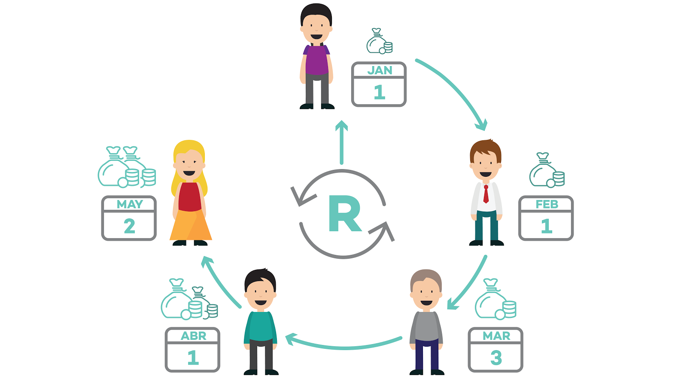

About The Contribution
Contribution wants to make saving, investing and borrowing money more efficient. Evidently saving within a group is more efficient than doing it by yourself. Each one of us has a social equity that is usually leveraged to borrow money quickly and efficiently in times of need and if we have an option to park money where we make more returns than a fixed deposit won't we be interested? The simplest way for anyone today is to be able to do this is on a mobile phone and on the move! So, Money Club is creating a mobile app that enables people to form closed and highly trusted clubs within which they can Save, Invest and borrow money more efficiently!
Our Mission
Our mission is to help both individuals and organizations to move forward together. We help create groups and communities for like minded people to come together. Our efforts grow companies and support communities. The increase in technology advancement has brought this innovation where people can digitally organize saving pools on websites and mobile apps form anywhere in the world. Contribution enable people to borrow and save easily without any hassles, this can be done with a few clicks on our platform.

Our Vision
Our vision is to democratize community banking. Over centuries, rotating savings and credit associations (ROSCAs) have been used by demographics with a strong social fabric wgere groups come together to save, borrow and lend money to each other. We believe that this is a strong institution where the credit risk lies with the user and evidently, individual users are quite good at assessing the credit risks of their peers. Contribution is formed with the vision to use technology to put the power of banking into the hands of trusted communities around the globe.

Advantages Of Joining The Contribution
- It has a clear beginning and end.
- There is no need to store the funds as money goes from one member's account to another's.
- It is a great saving instrument in rural areas where formal savings institutions are absent.
- There are wide variety of CONTRIBUTIONS - market, religious, office, ethnic or neighbourhood.
- It is an efficient business model. Money is out in the "pool", the metting is held and the money is then distibuted.
CONTRIBUTION enables people to reach their goals faster while improving their financial well-being. This has just begun its journey and is all set to gain consumer attention and be known as an effective saving and credit solution. Many people across the world might be unaware of this now, but very soon things are going to change.